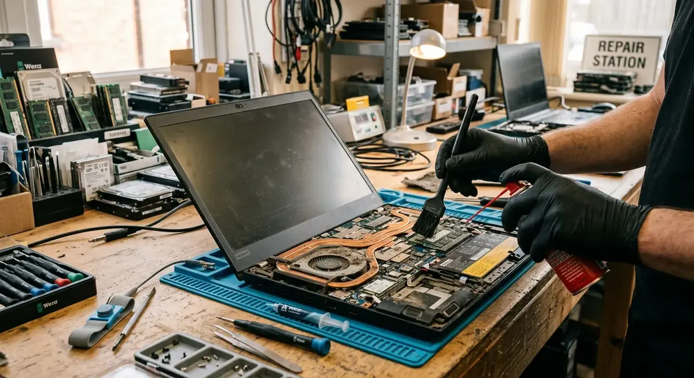
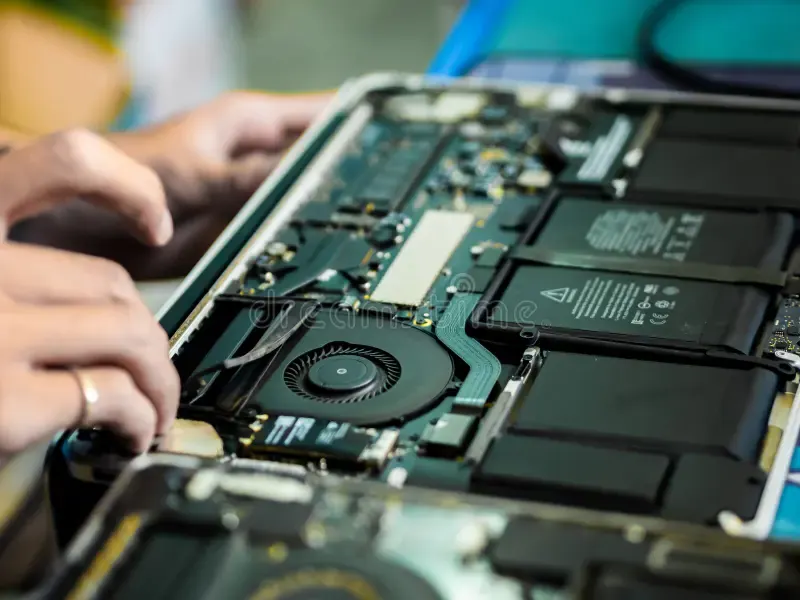

Laptops
5 Signs That Your Laptop Needs Servicing
Learn five common signs that your laptop needs professional servicing, from overheating and slow performance to battery and hardware problems.
Introduction
A laptop is an essential piece of equipment for the modern world. As they can be used frequently small issues can occur. You may notice that it now takes several minutes to boot into the laptop, the fan is louder than usual, the keyboard feels hot or the battery doesn’t last long enough to complete a usual working session.
Regular maintenance helps to identify any wear and tear, remove any dust, check the software and ensure key components are running safely. Below are 5 signs that you should consider having a professional look at your laptop:

1. Overheating / Loud Fan
Laptops will run warm when completing a high demand task, but if it is overheating then it could be a sign something is wrong. If the keyboard or bottom is getting too hot to use during normal tasks, or the fan is running loudly whilst using just a browser or document, it could be that your laptop is struggling to cool.
This can happen due to dust build up inside the vents, fan and heatsink blocking airflow. A worn fan, dried thermal paste, blocked vents and/or high demand processes running in the background. This can cause your laptop to slow down to protect the components. This is called thermal throttling, you may notice a slowdown, unexpected shutdowns or slow performance when using video calling, gaming or performing a high demand task.
Ensure your laptop is placed on a firm flat surface, free from covering the vents. Close down any applications using unnecessary processing power. Ensure you are not pushing anything into the vents and only open the laptop if you have the right tools and knowledge. If you are still experiencing overheating issues then a technician can investigate the cooling components, safely remove any dust and check your fan and thermal paste. This is especially important if your laptop is shutting down unexpectedly or running very hot.
2. Slower Performance
Your laptop can run slower due to a variety of reasons. Too many startup programs, low storage space, outdated software, malware, low memory or a failing storage drive. If your laptop is running slowly to boot up, freezing when opening normal applications or frequently showing a loading circle then further investigation is required.
Begin by restarting your laptop and updating any pending OS and application updates from a trusted source. Disable any unnecessary startup programs. Delete any unneeded files and ensure important documents and photos are backed up separately. Check Task Manager (Windows) or Activity Monitor (Mac) to see which applications are using an unusual amount of CPU, Memory or Disk.
By completing these steps you should see an improvement. However if your laptop is still running slowly a technician can investigate the health of your drive, memory, cooling and any errors in the Operating System. Upgrading to a solid state drive instead of a traditional hard disk drive can significantly improve the performance of a compatible laptop. Increasing the memory can also help if you frequently use multiple applications. However the right solution depends on your laptop model, specification and the tasks you require.
3. Battery Life / Charging Issues
The battery in your laptop will reduce as they age. If you’re noticing your battery isn’t lasting long when fully charged, dropping rapidly or shutting down when disconnected then your battery may be worn. Charging issues can also occur due to a damaged cable, loose charging port, incorrect charger or power issues.
Check if your battery level is increasing when plugged into the correct charger. Check the charging cable and charger for any visible damage, excessive heat or loose connections. Ensure you are using the correct charger for your specific model and do not force the connector into the charging port. If your laptop supports it you can check the health of the battery and see how much charge is left and how many charge cycles it has completed.
A technician can investigate the health of your charger, charging port and battery. If your battery requires replacing then ensure you use a compatible quality battery to be fitted safely. If your battery is swelling then this is a serious issue. Stop using and charging your laptop and do not press or puncture the battery. Arrange for a professional service to be completed as soon as possible. Never throw away any damaged lithium ion batteries.

4. Unusual Sounds / Freezing / Unexpected Shutdowns
Unusual clicking, grinding or rattling sounds shouldn’t be ignored. Some laptops use a mechanical hard drive which can cause noise if there is an issue. The fan can also cause a rattling noise if there is an obstruction or damage. However modern laptops use solid state drives with no moving parts so the clicking is more likely to be from another component.
If your laptop is frequently freezing, displaying blue screens, randomly restarting or unexpectedly shutting down it could be due to overheating, memory issues, storage issues, corrupt drivers, power issues or other hardware issues. Make a note of when the issue is occurring and any error messages displayed. If your laptop is still working back up any important files to an external drive or trusted cloud. If your laptop is becoming unstable then you should not rely on it as your only copy.
Avoid forcing your laptop to restart if there are unusual noises coming from your drive. A professional can investigate the memory, storage, cooling and power components. Identifying an issue early can help prevent a small issue turning into a more costly repair and help keep your data safe.
5. Keyboard, Screen, Ports or Other Issues
Not all hardware issues are major. You may be noticing individual keys aren’t working, the touchpad is acting strangely, the screen is flickering or your USB and charging ports are loose. You may also notice dead pixels, lines on your screen, distorted sound or your webcam is no longer being detected.
Start by removing any external accessories, restarting your laptop and ensuring you have the correct input / display settings. If your external monitor is working but your laptop screen isn’t then there could be an issue with the screen, cable or graphics. If only one USB isn’t working try plugging another known working device into another port.
Do not force the USB plug in, press hard on a broken screen or attempt to clean your keyboard with liquid cleaners. If you have had a spill then take extra care. Turn the laptop off and if possible unplug the power. Seek professional advice. By powering on a device with liquid damage you are increasing the risk of corrosion or short circuits. A technician can identify if a component can be repaired or needs replacing.
What can be done during a professional laptop service?
During a service a technician may check the exterior, internal dust, cooling, fan and temperature, storage health, memory, battery & charging, OS and basic keyboard, screen, ports, camera & sound. The exact tasks will depend on the condition of your laptop and symptoms.
Before handing over your laptop ensure you have backed up any important files. Make a note of the condition of your laptop and clearly describe any symptoms. Ask what they will be checking, if any parts are original or compatible, the estimated cost and if there is a service warranty. Avoid sharing your passwords. If they do need to access your laptop for testing then discuss setting up a temporary account.
How to minimise unexpected repairs
Place your laptop on a clean firm surface and ensure there is plenty of space around the ventilation. Wipe the outside using the correct cleaning products and a soft cloth. Ensure your OS and security software is up to date, use reliable security software, avoid downloading anything suspicious and ensure you have regular backups. Avoid eating or drinking near your laptop and place in a padded bag. Avoid tugging the charging cable.
Whilst good habits won’t stop all hardware issues they can help reduce any unnecessary damage and make it easier to identify issues. Checking your laptop periodically can be very helpful if regularly used for business, learning or high demand tasks.
Conclusion
Overheating, slow performance, bad battery life, unusual noises and hardware issues are 5 key indicators that your laptop may need some maintenance. Don’t wait until it completely fails. Back up your data, make a note of any symptoms and book in a qualified technician. Performing maintenance can improve the reliability of your laptop and keep your valuable data safe.
Printerworld can be a great contact point for your laptop and printer needs. Ensure you know what services can be provided, what they will be doing to diagnose, the estimated cost and warranty for your specific device.
Need a hand with your printer or laptop?
Printerworld sells printers, laptops and genuine supplies, and repairs and services both. Bring in your model number and we will help you get it right.